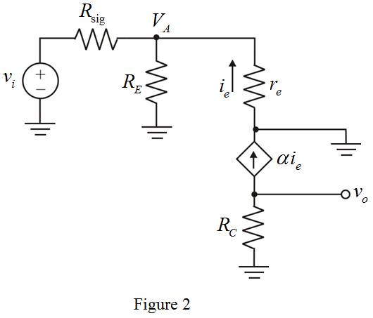

From the Figure 2, the expression for current is,
is,

Apply Kirchhoff’s current law at node .
.
Substitute for in the equation.
Refer to Figure 6.44 (a) in the text book.
Draw the modified circuit of Figure 6.44 (a) with the signal source has an internal resistance.
Draw the small signal equivalent circuit diagram of Figure 1.

From the Figure 2, the expression for currentis,
Apply Kirchhoff’s current law at node.
Substitute for in the equation.
Apply Kirchhoff’s current law at node .
.
Substitute for in the equation.
Substitute  for
for  and
and  for
for  in the equation.
in the equation.
Determine the value of resistor,  .
.
Substitute  for
for  and
and  for
for  in the equation.
in the equation.
Determine the value of common-base current gain.

Substitute  for
for  in the equation.
in the equation.

Determine the value of overall voltage of the amplifier.

Substitute  for
for  ,for
,for  , for
, for  ,
,  for
for  and
and  for
for  in the equation.
in the equation.
Thus, the value of overall voltage of the amplifier,  is .
is .
Determine the value of collector voltage.
Substitute for  ,
, for
for  and for
and for  in the equation.
in the equation.
When the peak output signal is exceeds the difference between the voltage across the collector and the negative supply, the amplifier clips the output signal.
Substitute for and  for in the equation.
for in the equation.
Determine the value of largest input signal that can be used without the output signal clipping.
Substitute for  in the equation.
in the equation.

Thus, the largest input signal that can be used without the output signal clipping,  is .
is .